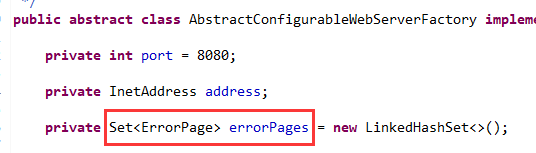
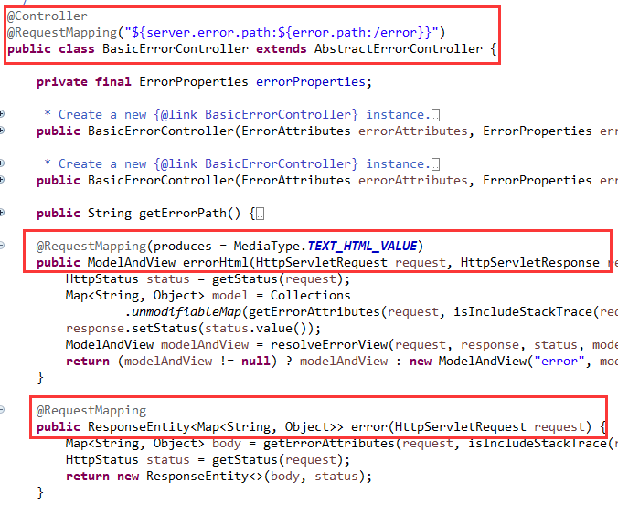

原文连接:https://www.cnblogs.com/lixinjie/p/playing-springboot-006.html
其实web服务器是会处理错误的
在web.xml还是随处可见的年代时（确实有点老黄历了），下面的这些配置应该都不陌生。
根据错误代码处理错误，如下图01：
根据异常类型处理错误，如下图02：
不过我们更加熟悉的应该是SpringMVC的统一异常处理。如下图03：
看到@ControllerAdvice注解和@ExceptionHandler注解都应该很熟悉吧。
处理原理就是在捕获到业务Controller有异常抛出时，根据异常类型来这里找到对应的方法并执行。
可见，整个异常的处理过程都是在SpringMVC内部给搞定了，根本就没有涉及到web服务器，如tomcat。
那么问题来了，明明web服务器可以处理异常，为啥SpringMVC还要自己处理呢？
是不想呢，还是另有苦衷
读过本系列上一篇文章的小伙伴应该能猜出来一些。因为SpringMVC开发的工程最终打成war包，然后扔到tomcat下面即可。
而且SpringMVC和tomcat之间是通过Java Web的规范联系起来的，它们之间根本没有办法自由交互的。
然而tomcat的错误处理需要在web.xml里面配置。严格来说，web.xml其实和SpringMVC关系不大。
特别是Spring全面进入Java和注解配置时代以后，web.xml逐渐被弱化，继而变得可有可无，直到最终完全消失。
所以（我猜测）SpringMVC可能不希望自己的用户到一个和自己关系不大的web.xml里面配置一些和业务相关的异常处理映射。
所以只好自己把异常处理消化掉。不劳tomcat大驾。因此才有了SpringMVC统一处理异常。
重新让web服务器来处理错误
当历史来到了SpringBoot的时代，SpringBoot翻身做主成了入口，web服务器竟然成了一个组件。
SpringBoot可以操作web服务器的API，通过编程的方式，对web服务器进行深度配置。
所以很多事情都变得容易起来，比如错误处理。
因为web.xml里的错误处理映射最终是注册到tomcat里面了，所以SpringBoot只要操作tomcat的API，使用编程的方式也来注册一些错误处理映射不就可以了嘛。
因为用户直接是和SpringBoot打交道的，所以SpringBoot需要抽象出一套错误处理注册机制，让用户来注册。
这样SpringBoot拿到用户注册的错误处理映射信息后，在生成web服务器（如tomcat）时，把这些映射信息添加到web服务器中即可。
SpringBoot注册错误处理映射的方案
先来看看错误处理映射是如何描述的，如下图04：
三个字段的含义是：
path是一个路径，它表示的是错误处理的url。
status是一个状态码，如404、500等。
exception是一个异常类型，如LoginFailedException。
一共有三种使用方式：
1）status + path，如404 + /404，表示如果遇到了404，就去执行/404这个url。
2）exception + path，如LoginFailedException + /loginfailed，表示如果遇到登陆失败异常，就去执行后面这个url
3）没有status和exception，只有path，这相当于通配符，匹配所有异常情况。
接下来就该考虑如何注册了，照例给个接口就行了，如下图0506：
Spring是以bean打天下的，所以SpringBoot给的方法当然也是和bean相关。
只要向容器中注册一个该接口类型的bean即可，如下图07：
这些信息会被收集到并存好，如下图08：

然后在创建web服务器时添加进去就行了，以tomcat为例，如下图09：
可以看到最终转换为tomcat的错误映射，如下图10：
这里的setLocation、setErrorCode、setExceptionType三个setter方法，就对应于web.xml里的<location>、<error-code>、<exception-type>这三个标签。
至此，错误处理已经被注册好了。
SpringBoot仍需协助处理错误
有一点需要明白，SpringMVC交给tomcat的只是错误处理映射的匹配工作，但有些真正的错误处理还是要自己做的。
所以整个过程是这样的，SpringMVC随意抛出异常，这个异常会被抛到tomcat里面，tomcat获取异常类型并根据注册的错误处理映射关系找到一个url，然后调用这个url。
那么请问这个url指向哪里呢？很大概率又回到了SpringMVC里面了，是不是很有意思，哈哈。
tomcat就像一面镜子，SpringMVC向它发射了一束光线，经过反射后又回来了。只不过发射的是一个异常，回来的是一个url。
这个url对应的是能够处理这个错误的一个Controller的方法。这样执行这个Controller方法就等于处理了异常。
这个Controller是一个能够处理错误的Controller，所以就叫ErrorController。如下图11：

其实它主要是一个Marker接口，也就起一个标志作用。
下面是真正用于处理错误的Controller，实现了刚刚的标志接口，如下图12：

@RequestMapping方法就是处理错误的，既可以返回JSON，也可以返回视图页面。
我们可以自己写一个错误处理类，然后继承这个类，添加自己的错误处理方法，最后使用@Controller注解重新注册即可。
可以把一个异常映射成和它名称一样的url路径，如把Exception映射为/Exception，如下图13：
这两个方法，一个返回html页面，一个返回一个JSON。
备注：异常类型和它映射的url之间的关系，可以按自己的需求去规划，统一规则即可。
处理错误时，自然要获得错误相关信息才行，这个接口可以满足，如下图14：
可以获得错误属性和抛出的异常对象。
可以看到接口的两个方法都有WebRequest这个参数，说明错误信息是从request中获取出来的。
同时也说明有些错误信息是有人专门放入request中的，是SpringBoot放的，还是web服务器放的？
其实都有，比如异常对象是SpringBoot放的，响应状态码是web服务器（按Java web规范）放的。
这也说明web服务器执行错误处理的url时用的是转发（forward）而非重定向（redirect），因为要保留request中的信息。
还剩最后一个，错误视图解析器，如下图15：
SpringBoot自己提供了默认的视图解析器实现，默认去classpath下面的error目录下寻找.html视图页面。
如下图16：
支持状态码到页面的映射，如404默认映射为/error/404.html，500默认映射为/error/500.html。
如果没有这么具体的页面，还支持系列映射，如404映射为/error/4xx.html，500映射为5xx.html。
当然，默认的一般都无法满足需求，我们可以继承这个默认的类，然后重写视图解析方法。
最后把这个类注册为bean即可，这样SpringBoot就会使用我们的类了。如下图17：
本文总结，重要
1）用户使用SpringBoot提供的错误处理映射机制注册状态码和异常的映射url信息。
2）这些映射信息最终会被注册进web服务器中，如tomcat。
3）SpringBoot把异常抛给web服务器，web服务器根据异常找到对应的url，并执行它。
4）流程再次回到SpringBoot中，进入错误处理Controller的方法中，执行错误处理方法。
5）如果需要解析视图的，使用错误视图解析器进行视图解析。否则就是直接返回JSON。
其中用户能参与的就三步，注册异常映射，扩展错误处理Controller，扩展错误视图解析器。
具体参与方式文章中都有，无非就是实现接口或继承某个类，然后注册为bean即可。
>>> 玩转SpringBoot系列文章 <<<
【玩转SpringBoot】用好条件相关注解，开启自动配置之门
【玩转SpringBoot】看似复杂的Environment其实很简单
>>> 品Spring系列文章 <<<
品Spring：SpringBoot和Spring到底有没有本质的不同？
品Spring：SpringBoot轻松取胜bean定义注册的“第一阶段”
品Spring：SpringBoot发起bean定义注册的“二次攻坚战”
品Spring：注解之王@Configuration和它的一众“小弟们”
品Spring：对@PostConstruct和@PreDestroy注解的处理方法
品Spring：对@Autowired和@Value注解的处理方法
品Spring：真没想到，三十步才能完成一个bean实例的创建
品Spring：关于@Scheduled定时任务的思考与探索，结果尴尬了
>>> 热门文章集锦 <<<
爸爸又给Spring MVC生了个弟弟叫Spring WebFlux
【面试】吃透了这些Redis知识点，面试官一定觉得你很NB（干货 | 建议珍藏）
【面试】如果你这样回答“什么是线程安全”，面试官都会对你刮目相看（建议珍藏）
【面试】迄今为止把同步/异步/阻塞/非阻塞/BIO/NIO/AIO讲的这么清楚的好文章（快快珍藏）
【面试】一篇文章帮你彻底搞清楚“I/O多路复用”和“异步I/O”的前世今生（深度好文，建议珍藏）
作者是工作超过10年的码农，现在任架构师。喜欢研究技术，崇尚简单快乐。追求以通俗易懂的语言解说技术，希望所有的读者都能看懂并记住。下面是公众号的二维码，欢迎关注！